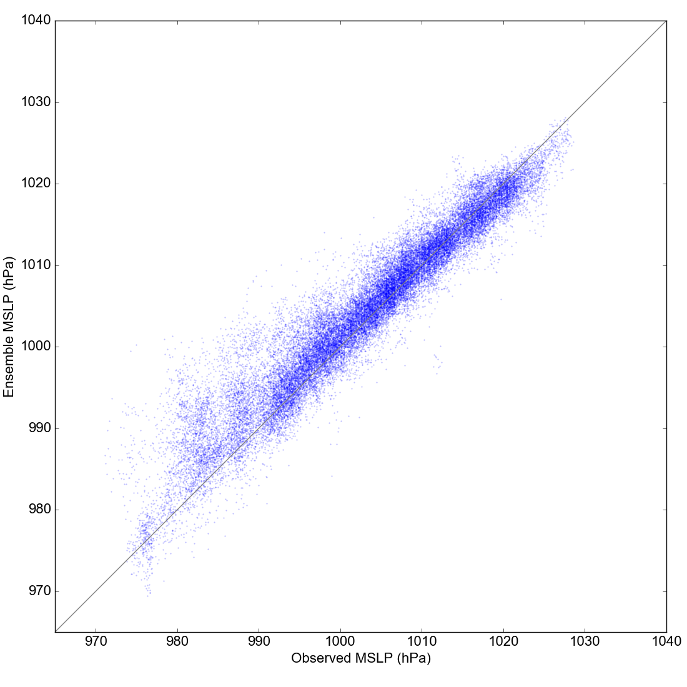

Validating CERA20C against DWR data: October 1903 monthly scatterplot¶
See also

{kind=link}
Observed versus ensemble MSLP for each observation in the month
Collect the reanalysis data:
import Meteorographica.data.cera20c as cera20c
cera20c.fetch('prmsl',1903,10)
Extract the ensemble pressures at the space and time location of each observation
# UK region weather plot
# Collect reanalysis comparison data for
# Every DWR ob in a month
import os
import datetime
import pandas
import iris
import pickle
import Meteorographica.data.cera20c as cera20c
import DWR
# Set output file
opfile=("%s/images/DWR/vcs_cera20c_1903_month_comparison.pkl" %
os.getenv('SCRATCH'))
obs=DWR.load_observations('prmsl',
datetime.datetime(1903,10,1,6),
datetime.datetime(1903,10,31,18))
# Remove stations already in ISPD
obs=obs[~obs['name'].isin(['BODO','HAPARANDA','HERNOSAND',
'STOCKHOLM','WISBY','ABERDEEN',
'VALENCIA','FANO','SCILLY','JERSEY',
'LISBON','DUNGENESS','THEHELDER',
'BERLIN'])]
# Get a list of all the times where there is at least 1 observation.
ob_times=obs['dtm'].unique()
# At each such time, get the reanalysis ensemble at all the
# stations reporting at that time.
ensembles=[]
observations=[]
for ob_time in ob_times:
ob_time=pandas.to_datetime(ob_time)
print ob_time
prmsl=cera20c.load('prmsl',ob_time.year,ob_time.month,ob_time.day,
ob_time.hour+ob_time.minute/60.0)
prmsl.data=prmsl.data/100.0 # to hPa
interpolator = iris.analysis.Linear().interpolator(prmsl,
['latitude', 'longitude'])
obs_current=obs[obs['dtm']==ob_time]
for ob in obs_current.itertuples():
ensemble=interpolator([ob.latitude,ob.longitude])
ensembles.append([ensemble.data])
observations.append(ob.value)
afile = open(opfile, 'wb')
pickle.dump({'ensembles': ensembles,
'observations':observations}, afile)
afile.close()
Make the figure:
# UK region weather plot
# 20CR2c pressures and validation against DWR
import os
import pickle
import numpy
import matplotlib
from matplotlib.backends.backend_agg import \
FigureCanvasAgg as FigureCanvas
from matplotlib.figure import Figure
# Landscape page
fig=Figure(figsize=(11,11), # Width, Height (inches)
dpi=100,
facecolor=(0.88,0.88,0.88,1),
edgecolor=None,
linewidth=0.0,
frameon=False,
subplotpars=None,
tight_layout=None)
canvas=FigureCanvas(fig)
font = {'family' : 'sans-serif',
'sans-serif' : 'Arial',
'weight' : 'normal',
'size' : 16}
matplotlib.rc('font', **font)
# load the pre-prepared data
ipfile=("%s/images/DWR/vcs_cera20c_1903_month_comparison.pkl" %
os.getenv('SCRATCH'))
d_file = open(ipfile, 'rb')
dmonth = pickle.load(d_file)
d_file.close()
# Fill the frame with an axes
ax=fig.add_axes([0.08,0.08,0.89,0.89])
d_range=[965,1040]
# x-axis
ax.set_xlim(d_range)
ax.set_xlabel('Observed MSLP (hPa)')
# y-axis
ax.set_ylim(d_range)
ax.set_ylabel('Ensemble MSLP (hPa)')
# Background 1-to-1 line
ax.add_line(matplotlib.lines.Line2D(
xdata=[d_range],
ydata=[d_range],
linestyle='solid',
linewidth=1,
color=(0.5,0.5,0.5,1),
zorder=1))
# Plot the ensembles
jitter=numpy.linspace(-0.5,0.5,len(dmonth['ensembles'][0][0]))
for idx in range(len(dmonth['observations'])):
obs_ens=[dmonth['observations'][idx]]*len(dmonth['ensembles'][idx][0])
ax.scatter(obs_ens+jitter,
dmonth['ensembles'][idx][0],
s=10,
marker='.',
alpha=0.25,
linewidths=0.01,
c='blue',
edgecolors='blue')
# Output as png
fig.savefig('Scatter_month.png')